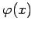

Inhalt Index DeskTop Bronstein

 Funktionen und ihre Darstellung Funktionsbegriff Stetigkeit einer Funktion Eigenschaften stetiger Funktionen
Funktionen und ihre Darstellung Funktionsbegriff Stetigkeit einer Funktion Eigenschaften stetiger Funktionen


Wenn eine Funktion f(x) in einem zusammenhängenden Gebiet I definiert und stetig ist und in diesem Gebiet streng monoton wächst oder fällt, dann existiert eine zu dieser Funktion stetige, ebenfalls streng monoton wachsende bzw. fallende inverse Funktion , die im Gebiet II für die Werte, die von der Funktion f(x) angenommen werden, definiert ist.